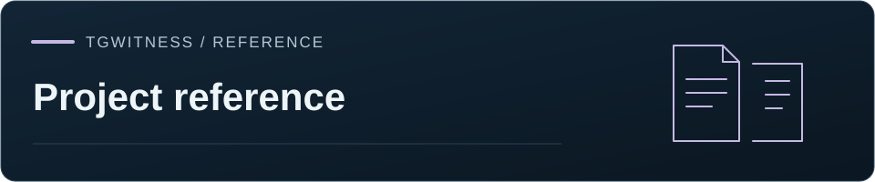

이 페이지는 영어로만 제공됩니다.
참고 문헌 / 보안 및 프로젝트
변경 내역
아직 공개되지 않은 변경 사항을 포함하여 버전별 모든 변경 내역.
TgWitness / Documentation · Project reference

On this page
Unreleased#
-
Remove the unused one-shot exporter and check recovery against the current exporter. Reject unexpected or repeated message IDs in recheck responses.
-
Combine concurrent exports with resumable Standard API and Takeout acquisition. Each job retains its own progress, timings and signed checkpoints; accounts remain reserved until that job stops. Include the account controls, batch import and report-verification updates in the same build.
-
Add offline
VERIFY.cmd/VERIFY.shlaunchers, plain-language verification explanations and saved UTF-8 transcripts to signed exports in all 25 panel languages. Build a separate Windows verifier with an embedded runtime and a language menu. Unpinned signers remain unconfirmed; successful integrity verification does not establish admissibility. - Add optional jurisdiction guidance for 25 countries to Report Studio and exported assessments, with separate civil/criminal sources, local-language summaries and next steps derived from the actual package. Guidance remains a research draft, does not raise assurance, and is excluded from reusable layout profiles and inherited sharing-copy settings.
-
Allow the pinned Russian morphology dictionary resources in Windows portable builds while continuing to reject unrecognized files in dependency data directories.
-
Keep missing-on-recheck observations separate from deletion notices in HTML, JSON and PDF counts and viewer labels. Do not claim unscoped deletion IDs were never saved when their chat is outside the current observation scope.
-
Record multiple deleted IDs as a deletion batch without inferring a whole-history clear, the deleting participant, or deletion for everyone. Relabel legacy history-clear events without changing their signed records.
-
Publish the one-command installer only after application and security checks pass for the exact main commit and the signed package passes Ubuntu local/HTTPS service and Windows PowerShell acceptance. Keep the previous download when checks fail or time out. Add authenticated tests of the actual public installer URLs.
-
Preserve
previous_hashin the signed-record preview even when its hexadecimal digits resemble a payment card number. Secret masking still applies to message content; the stored record is unchanged. -
Reconstruct compact chat snapshots consistently in MCP, retain unknown fields, and distinguish capped lists from removals. Resume date scans, preserve topic names across history reads, and bound image previews. Apply metric choices to filtered reports and count historical service messages separately.
-
Plan sealed exports against the remaining session time, offer smaller selections, update progress estimates and reserve time for packaging.
- Compare every message field, validate record counts and structure, enforce CLI verification options, and display OpenTimestamps states separately.
-
Close coverage on worker failure, bind heartbeats to the capture run, and verify TDX signing-key binding and supported component statuses.
-
Add read-only MCP tools (preview):
get_messages_by_date(one calendar day in a named time zone, computed server-side),get_pinned_messages,get_chat_statswithgap_summary,get_topics, andget_media, which returns a verified, downscaled image preview anchored to its SHA-256 andmedia.savedrecord. Every MCP tool now declares an output schema. New connections include these tools; existing connections keep the tools they were issued with. -
Show each account's selected route and checked exit address, group session controls, and retain interface preferences when adding an account. Record connection changes without repeating identical background checks. Validate withheld-marker contents and reply states in minimized exports, including rejection of a missing-source label for an included record.
-
Update collection-mode instructions and Russian guidance. Allow a bounded publication-settling interval while requiring exact installer bytes.
-
Mark messages left out of a minimized disclosure (preview): inside each disclosed chat, withheld messages appear as content-free markers naming the selection rule, one per run or one per message, and disclosed replies state whether they answer a disclosed message, a withheld one or one that is not in the source export. The package format becomes
tgwitness-account-disclosure-v2;verify.pyrejects markers with content and replies pointing at missing records, and still verifies version 1 packages. -
Repeat gap analysis with the settings carried by the signed export, count each service-message number once, and bound account estimates to the measured interval. Require explicit whole-account scope, retain pause/resume boundaries, and interrupt expensive archive scans at their time budget.
-
Add missing message numbers (preview):
coverage.json, the HTML and PDF reports,verify.pyand the archive'sget_capture_statusmeasure numbers Telegram assigned and this collector never saw, per channel or supergroup and for the account-wide sequence of private chats, bots and ordinary groups during whole-account collection. Each result states whether it applies and why, lists its parameters, and anchors listed gaps to the neighbouring observations. Parameters → Gap analysis sets the listed gaps, the account-wide sequence and an optional service-message estimate that is never subtracted. A gap names no actor and no reason. - Record in the signed message when self-destructing media is fetched despite a type or duration rule (
media_capture.rule_override), with the limits that still applied. - Add chat-state snapshots (preview): while observing, every enabled source is read periodically and saved as a signed
chat.staterecord with title, description, counts, pinned messages, administrators with rights, and gifts on channels and profiles, plus the differences from the previous snapshot. Unpinning, rights changes and gift conversions or upgrades without a service message become visible. Parts Telegram refuses are named and carried forward, never reported as removed. Parameters → Chat state sets the interval, pause and parts. - Add anomaly indicators to evidence reports (preview) as registered, versioned processors in
tgwitness/metrics/: first-time posters per day with flagged injection-like days, service messages among message numbers, joins and departures per month, and pins and unpins per month. Reports list every processor that ran with its version and print its method; Parameters → Report metrics chooses them. -
Keep ranked-search pages within the first 1,000 results regardless of page size, order OCR/transcription results before pagination, and retain exact match positions when Unicode expansions and invisible-character removal cancel each other's length changes.
-
Keep photo downloads on the still variant named by their metadata and hash manifests, including after file-reference renewal. Reject truncated photo/chat attachments and corrupt reused files instead of counting them as saved. Check recovered multi-account message IDs against missing intervals without expanding large gaps.
-
Release a session's local connection lock after transport shutdown, including when a disconnected client was already removed from the workspace. Cancelling the waiting operation cannot release the lock early, and closing an older session cannot unlock a different current key.
-
Apply a chat export's skip/hash-only choice to recovered messages and profile photos, and record that choice in the acquisition metadata. Reject changed messages before fetching attachments in the separate files stage. Count missing message numbers as intervals so sparse histories do not exhaust memory, including during a cancellable full recheck.
-
Preserve available self-destructing photos, videos and files in the API journal with a dedicated immediate queue, explicit TTL/view-once labels and signed saved/unavailable/not-saved outcomes. Block read receipts in the API client, including batches and wrapped requests. Keep byte limits, disk reserves and Telegram backoff; saved bytes do not establish human viewing.
- Preserve image-rendered Unicode emoji in official Web message text, reply previews, reactions and derived page text without changing the client DOM. A live account test exposed the omission; video and saved pages already retained the image.
- Improve chat-export Takeout, unreadable-message recovery, shared absent-number rechecks and bounded range retries. Preserve observed deletions in export scope, compare verified archives, and distinguish archive integrity from an independently confirmed signer.
- Protect imported sessions from remote logout, close idle connections and prevent simultaneous reuse of a session key. Add explicit session management and masked two-step password entry; cancellation or switching workspaces prevents submission. Read single-account export messages before their separate attachment stage.
- Keep source export and AI actions disabled while local source search is pending, empty or has failed; clear stale previews before the next search. Exercise delayed replies explicitly in browser checks.
- Use unambiguous synthetic privacy identifiers and report the exact marker/context on handover-test failures, avoiding accidental matches inside report metadata.
-
Add an in-panel comparison of collection methods and explain account task ownership beside full-history controls. Refresh source-version badges, qualification records and Trusted Live network results; check version labels before publication.
-
Add full-text search (preview): Russian and Ukrainian word forms, English stems, Chinese and Japanese phrases without spaces, exact phrases, domains in hidden links and buttons, @usernames, wallets and phones, filters for chat, sender, message ID and observation period, ranked with BM25. The index is derived from the signed journal, bound to its latest record hash, never exported, and can be kept on disk, in memory only or turned off. Recognized text is indexed in memory only and labelled as machine recognition.
- Ask the archive retrieves the best matches from the full-text index when it is complete, keeps the 24-source limit, and cuts long texts around their match. MCP
search_messagesacceptsranked=true. - Add
tgwitness index status|rebuildwith JSON output on stdout and stable exit codes. - Fix ranked search paging:
next_offsetis now returned when more matches exist, through/api/search, MCPsearch_messagesand Ask the archive's partial marker. Paging stops at the first 1,000 results. - Fix Ask the archive failing on questions longer than 24 words or 200 characters. The full-text query keeps the question's first distinct words; a query the index cannot read falls back to exact-text retrieval.
- Centre excerpts on the match in long texts that hide zero-width characters between letters.
- Build the website when a language lacks new translations: untranslated blocks stay in English with the page notice and are listed by the build.
- Add the command line (preview):
tgwitness search,context,messages,statsandexportwith--jsonand stable exit codes, reading a stopped workspace directly or a running panel through a scoped, revocable archive connection. Add.agents/skills/tgwitness-cli/SKILL.mdfor agents. - Add the
get_activity_statsarchive tool, also offered over MCP: messages by UTC hour and weekday, peak days, edit and deletion shares, senders, domains and @handles, with coverage gaps. Computed on request, not stored. - Add the
export_messagesarchive tool for the command line: saved observations streamed as JSON Lines in journal order, with full text and a completion record. It is granted only when selected; existing connections keep the tools they were issued with. - Recheck archive access before every streamed record, including completion. Revoked or expired connections end without a completion record; lazy export reads share the archive worker limit and timeout.
tgwitness indexand the new commands find the data directory of the installation that runs them.
0.9.1 preview · 5 November 2026#
- Keep message and attachment outcomes visible after single-chat sealed capture, including missing data, failed files and unfinished downloads. Translate final status when changing language after shutdown, and clear connection or export errors once they recover while retaining rejected-action and unconfirmed-revocation warnings.
- Update the pinned OAuthLib dependency to 4.0.1 for CVE-2026-49272 and regenerate the runtime, browser and MCP hash locks.
- Show in-flight attachment bytes without counting them as preserved evidence, reset progress on retries and clear it on pause. Keep official-client chat controls disabled during QR/2FA login and until a chat is available. Explain that Takeout approval requires another previously signed-in device. Bound CI dependency installation and avoid the stalled Azure package mirror.
- Add explicitly selected direct networking for official Web capture through GitHub Actions. Proxy remains the default and never falls back to direct. The panel and signed verification report disclose direct IP exposure, and verification rejects a mismatch between the selected route and the hosted network.
- Add an optional official Telegram Web observation mode with passive or sequential paced viewing, a fresh profile, restricted UI actions, login-excluded video and signed rendered observations. A required proxy bridge prevents direct fallback; exit changes stop recording. The GitHub Actions mode uses the approved sealed workflow and recipient encryption.
- Bind official recordings to independently saved source/settings, check video segment order and clean endings, record fresh drand rounds and support independent public-relay comparison. Report unfinished procedures, unconfirmed logout and the limits of local or Cloudflare assurance explicitly. See Official client witness for scope and validation.
-
Add opt-in Trusted Live preview: isolated official Desktop/Web sessions, native JSON preservation, guarded visual recording, per-chat continuity annotations, and verifier-recomputed reports. Supply a Linux network guard with no direct fallback, periodic proxy-routed drand observations, and optional independent read-only Cloudflare samples. Account/WARP/TDX qualification remains pending; see
docs/TRUSTED-LIVE.md. -
Make sealed export modes explicit: Telegram Takeout by default, regular API account export, or a single-chat event journal, with differences and limits shown before collection. Select multiple chats, save agreed settings, verify them with
--expected-selection, and reject incomplete account exports with--require-complete. Correct the outdated one-chat-only hosted documentation. - Preserve signed message pages before requesting files or hashes. Resume from frozen history, retain completed attachments, and finish an interrupted export with explicit gaps when time or disk is limited.
- Add Telegram Desktop compatible JSON/HTML views alongside authoritative signed data. GitHub capture supports full-account and selected-chat exports through regular API or Takeout, with chat types, dates and media settings.
- Deliver large GitHub archives in encrypted parts with a signed, attested manifest and verified local assembly. Remove the fixed 4 GiB delivery failure without omitting preserved evidence.
- Retry transient pinned OCR source downloads without relaxing checksum checks. Retry brief Windows file-sharing failures when saving private state.
- Configure account exports before collection: select chats and media types, exclude avatars by default, and choose downloads, Telegram range hashes or metadata only. Keep a shared attachment budget and record incomplete files explicitly.
- Show Takeout approval requirements and retry deadlines before collecting; check approval again without replacing the waiting session. Phone, QR and existing-session login retain their own authorization flow.
- Save Telegram-provided SHA-256 ranges with file representation and data-center metadata. Compare them against locally supplied files; Telegram identifiers and access hashes are not treated as content hashes.
- Collect message history across selected chats before processing attachments when messages-first mode is enabled. Preserve the journal in a compact export when full HTML or attachment packaging exceeds the remaining capacity.
- Stream sealed delivery encryption without a second full plaintext archive. Remove interrupted ciphertext, preserve the original evidence for retry, and keep capture deadlines across runner steps with time reserved for delivery.
- Require sealed-container validation in the release workflow. Phala deployment status now distinguishes verified, incomplete and review-required attestation instead of inferring trust from the provider name.
- Validate every sealed-container build input against its pinned source. Retry transient package downloads up to three times while retaining signature, SHA-256 and exact-package checks before offline installation.
- Include the hash-export configuration examples in source archives and preserve the translated documentation and required site assets from the latest main revision.
- Keep the current tunnel address when an older signed address post is replayed. Signed posts are ordered by their signed time; unsigned posts use the relay's receive time.
- Trust only the Caddy proxy on the private Docker HTTPS network and normalize client addresses for authentication limits.
- Keep operator IP addresses out of new signed access events, hide administrative payloads from shared views, and enforce workspace and export ownership boundaries.
- Reject duplicate JSON keys, prepended ZIP content and HTML injected into report seals; distinguish pinned witness keys from pinned collector keys.
0.9.0 preview · 4 November 2026#
- Reserve each account exclusively for monitoring, history or an export. Serialize Telegram RPCs and persist full FloodWait deadlines.
- Add durable distributed chat exports with date/language/reply filters, bounded labelled context, signed chunks and explicit pause/resume. See Distributed chat export.
- Keep account reservations until every export worker has stopped, including repeated pause requests and sibling worker failures. History loading in sealed sessions also reserves the account exclusively.
- Add participant timelines from saved observations: names, membership, explicit deletion flags and message activity. Profile refreshes are bounded; optional presence recording preserves unavailable or expired status as unknown and does not attribute online activity to a chat.
- Save, import and reuse report layout profiles without copying case details or report filters. Profiles are validated and isolated by workspace.
- Automatically offload eligible attachments to configured external storage under disk pressure, with reserve-space checks, compression, optional encryption and full readback verification before local eviction. Journals remain local.
- Make the recording settings and chat tabs fit narrow screens, including wider system fonts, and fix profile controls and localized labels.
-
Include reviewed website assets in source archives and verify conditional dependency versions in SBOM inventories.
-
Phala Cloud deployments work on Phala Cloud itself (first real run, 4 November 2026): the compose carries its name, Phala's own pre-launch script is kept out of the measured app-compose, the production OS image is chosen instead of Phala's development default, the instance ID is read from the CVM state, and restarts from the CVM's operations count in
provider_actions.tools/check_phala.pysimulates each of these. tdx_oswithout outside tools: the verifier downloads the published dstack OS image once, matches it to the hash the CVM reports and computes MRTD and RTMR0-2 itself, the ACPI tables QEMU builds for the VM's shape included. A development image, other firmware, kernel, command line, memory, vCPUs or devices fail. Each journal start is checked the same way.- Attestation certificate for Phala deployments:
verify --reportalso writes HTML and a signed PDF, sealed by a qualified eIDAS time stamp from the Belgian government's time-stamping authority, a FreeTSA time stamp and the verifier's own key;check-reportchecks the seal. - Quick tunnel addresses are also posted signed with the collector key, so a verifier is not misled by forged posts on the address topic; on Phala Cloud the tunnel check passes, since its connector runs inside the measured compose.
0.8.1 preview · 2 November 2026#
- Runtime, sealed and media containers moved to pinned Wolfi/glibc with Python 3.12 and hash-locked system packages (AMD64 + ARM64). Image scans are clean of HIGH/CRITICAL.
- Tesseract 5.5.4 built from verified source, English and Russian data pinned.
- Release checks now cover real OCR, offline transcription, signed multilingual PDFs and container restrictions. The source archive includes all container build inputs.
- Extras → Independent capture in the English panel: browser/AyuGram recorders with encrypted tokens, pinned keys, tab selection, start/pause, snapshots, checkpoints and verified ZIP downloads. Everything is off by default.
- New optional
tgwitness-capturepackage: Chromium PNG/MHTML snapshots, AyuGram SQLite copies, optional silent video, Ed25519 event chains, signed ZIP/HTML reports and a standalone verifier. Each recorder has its own key and storage. - Fixed Phala installs: source bundles were missing the capture package.
0.8.0 preview · 2 November 2026#
Reports
- Report studio: eight designs (Classic, Editorial, Briefing, Analytics, Technical, Overview, Reading series, Ledger & margin), live preview, HTML and native signed PDF. Switching designs keeps filters, charts and notes.
- Pick report data by chat, author, date and event type and preview it before saving. Edits show before/after, deletions show what was saved earlier.
- Reports look like proper dossiers now: cover, key figures, evidence map, numbered findings, timeline. PDFs get an A4 cover with QR, bookmarks and page refs.
- Each report explains what its conclusions rest on: export-time checks, observations, missing material, how to check it independently (EN/RU/DE wording).
- Send, edit and observed times are shown separately, plus replies, threads and metadata.
Case Board and groups
- Private Case Board: signed bookmarks, exact-version highlights, action slices, collections, threaded comments and statuses. Team notes stay apart from observations; the verifier checks board exports too. Export permission alone doesn't reveal team notes.
- Account groups share settings. Members follow the group, an account's own value wins until reset. Changes show which accounts they hit and ask before overwriting. Access can be granted to a whole group.
- Group screen at
/groups/<id>: accounts, problems, shared chats, group export.
Setup and connection
- Six-step first setup and one Settings page with simple/standard/expert levels, in all 25 languages. Each step has its own URL, Back works.
- The setup asks whether the account is a separate one; a main account only records chosen chats. After Start it shows that connection, events, sources and files work.
- Guided Connection screen: pick accounts, prepare and check a route, then apply. Direct, own proxies, public MTProto pool, WireGuard profiles and portable WARP.
- Automatic connection tries public MTProxy, then WARP, then direct (if allowed) and shows a status indicator instead of failing silently.
- Video duration limits in file policies.
Panel and safety
- No more one-click accidents: pausing, excluding and removing sources are confirmed, sending from a chat needs "Write as @account" first, route changes while observing offer to pause.
- One set of counters everywhere (deleted with text, deleted before saving, missing on recheck).
- Account files are inspected before connecting. URL, workspace and account always agree, a mismatch blocks actions. Chats open read-only and mask detected secrets.
- Downloads fall back to normal browser downloads, big archives stream through one-time cookies. Prepared exports keep size, SHA-256 and "Download again".
- Panel token rotation keeps the new session alive. Temporary network failures offer Retry.
- Panel dialogs instead of
window.confirm, journal paging fixed, lots of small UI fixes. - Public-channel showcase: expiring read-only links with redacted authors and signed snapshots.
Servers and evidence
- Extras → Server 24/7: a Hetzner server from the panel with a quick tunnel or your own
domain.
python -m tgwitness.cloud destroycleans everything up. - Phala Cloud option: the collector runs in an Intel TDX confidential VM,
verifychecks the attestation up to Intel's root. - Gateway DNS (
--gateway-dns): the server only resolves through Cloudflare Gateway. - Optional drand rounds and Telegram device lists in evidence mode.
- Setup by goal: four questions, suggested settings, credibility and reliability scales.
Other
- Notification service catalog with icons, optional operator control bot, Discord witness posts.
- Storage separates backups, verified file offloading and evidence retention.
- AI previews show the endpoint and outside route.
- Pull requests run both panel suites, including Firefox and WebKit downloads. Release packages wait for dependency, CodeQL and container audits.
- Docs: a panel guide for every screen.
0.7.1 preview · 1 November 2026#
- Start here with two paths: export my account, or follow an investigation.
- Account export through Telegram Takeout or the regular API, resumable, with signed progress and coverage records (account export).
- Separate signed sharing copies with filters, pseudonyms and optional text/file removal. Signatures establish integrity; they do not establish Telegram authorship, completeness or legal admissibility.
- Readable offline reports for account exports and sharing copies, printable, with record links and instructions for the recipient.
- Clear handoff after download: original vs sharing copy, report preview, instructions to copy.
- Rejected Telegram logins are told apart from paused accounts and network errors. Sign in again keeps the workspace.
- Load the history of enabled sources with pause/resume, plus a signed progress report (history).
- Read-only MCP at
/mcp, local archive search with optional AI, local OCR/transcription, signed webhooks with retries. - GitHub Actions capture preview: one chat on a temporary runner, encrypted result, pinned provenance (sealed capture).
- Self-contained signed reports in 25 languages with chain of custody; archives add
custody.jsonandSHA256SUMS. - Panel rework: workspace URLs, Back/Forward, drafts survive updates, Ctrl/Cmd+S, Sources split into tabs, Parameters search, journal filters and inspector, live updates.
- Batch session import, account groups, MTProxy dashboard with ping, countries and own lists.
- MTProxy decryption through OpenSSL (it used to eat a whole CPU core).
- Stronger masking in sharing copies, bounded media decoding, repeatable source ZIPs.
- Notification services refuse redirects. Weekly Dependabot, nightly CodeQL and container scans.
- Lots of fixes: stuck chat profiles, quick search, DST in search dates, 502s behind Caddy, GIF/sticker downloads, slow proxy list parsing, duplicate sessions on import.
0.7.0 preview · 31 October 2026#
- OpenTimestamps proofs are parsed strictly; Bitcoin attestations show as
bitcoin-unverifieduntil you runots verify. - Verification reports which part of the journal witness checkpoints cover;
--require-witnessdemands a pinned witness and matching final record. - Access and permissions guides, updated proxy and IP mode guides.
- Panel and docs site in 25 languages. Site publishing fails on missing translations.
- Added the roadmap.
Initial preview contents · 30 October 2026#
- First GitHub release: Windows portable, wheel, source archive.
- The setup guide has an "Open to everyone" section: no country or sanctions blocks, and Taylor Wessing as the only incompatibility we name. It is our position, not a licence condition.
- The README and Wiki now present the authors' Ethical Notice & Historical Continuity statement, with document references, historical context and an explicit explanation that MIT permission applies to everyone.
- The operator notice and the Taylor Wessing page speak in our own voice.
- Returned to the MIT License. A tool whose output third parties must be able to check
should not stumble over its licence.
LICENSEis the standard MIT text again, the package declares MIT with the OSI classifier, and the container, portable package, website, Wiki and translated README labels say so. Our statement stays in NOTICE and on the Taylor Wessing page as our position; it adds no licence condition. The presentation artwork reads "open source" again. - Added our Operator Incompatibility NOTICE to README, SECURITY, the documentation, Wiki and website. A single source keeps the complete statement consistent across those pages; source, Python and portable distributions include NOTICE alongside the licence.
- High-assurance deployment (
python -m tgwitness.cloud, guide) on Hetzner, DigitalOcean, Linode, Vultr or EC2: no SSH key, no inbound ports, panel only through a Cloudflare Tunnel, and averifycommand for third parties. - Local launchers open the panel in the browser once it's up.
- Read-only online demo of the real panel with fictional data.
- Wiki with 13 guides, docs website with a reference section, search, diagrams and 13 languages.
- Sign out of Telegram on the Account page.
- About 940 Russian panel strings fixed by hand.
- Observation scope: chosen chats, a folder or the whole account, by type. New chats are picked up immediately.
- Investigation mode for accounts that join groups and talk to bots.
- People profiles (opt-in per chat), independent witness bot, notification excerpts, Parameters page, light/dark theme.
- Panel mini-client: send messages, press bot buttons, preview and join invites.
- Fixed message loss after a long stop (rechecks used to stop after 1,000 messages).
- Many fixes from a full review: attachment byte counts, restore checks, scope edge cases, verify.py witness handling, off-site copy retries.
- Pillow 13 (39 advisories against 12.3).
0.6.1 · 27 October 2026#
- Renamed TgWatch to TgWitness, old archives still verify.
- Evidence mode timestamps checkpoints with RFC 3161 and OpenTimestamps.
- Password-protected AES-256 ZIP exports.
- Notifications through Apprise.
- 13 interface languages; README, Quick start and Deployment in 12 languages.
- Encrypted off-site copy to S3-compatible storage with Object Lock.
- Catch-up after restart and rechecks every 15 minutes.
- Built-in pool of public API pairs, no own API ID needed.
- New Chats view, Accounts view, multi-account chat export, signed full chat export.
- Windows portable package, public website, GitHub Pages workflow.
- Better launchers on all platforms, redesigned panel, new logo.
0.6.0 · 27 October 2026#
- New account form with Phone, QR code, Files and Auth key tabs.
- Auth Key + DC ID sign-in, Telethon/Pyrogram sessions, TData ZIPs, StringSession, account JSON.
- QR login with 2FA, Desktop local passcodes.
- Demo opens on its sample journal; refreshed panel look.
0.5.1 · 27 October 2026#
- Only the active account client is accepted; rejected logins are disconnected.
- Windowless Windows launches with logs in
logs/server.log. - Case-insensitive Unicode search, full UTC dates on phones.
- Linux/macOS launch scripts, Docker helpers, optional HTTPS with Caddy, GHCR images.
- Docs on export signatures and investigation handoff.
0.5.0 · 26 October 2026#
- Per-account monitoring categories, presets and signed policy changes.
- Direct local entry to synthetic demos.
Older history: release status and verification.